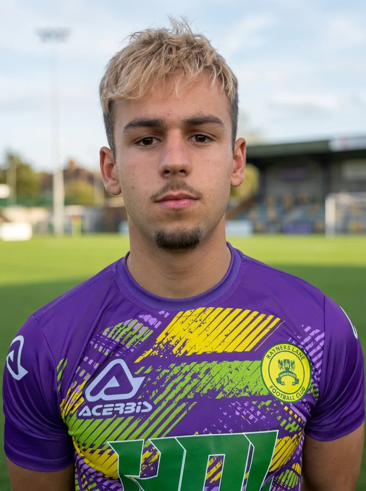
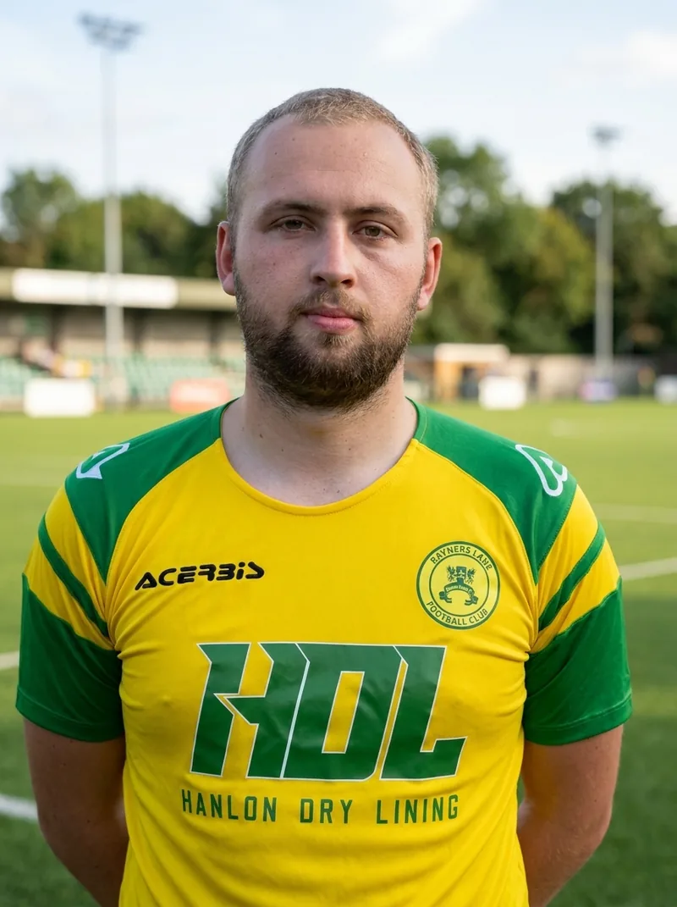
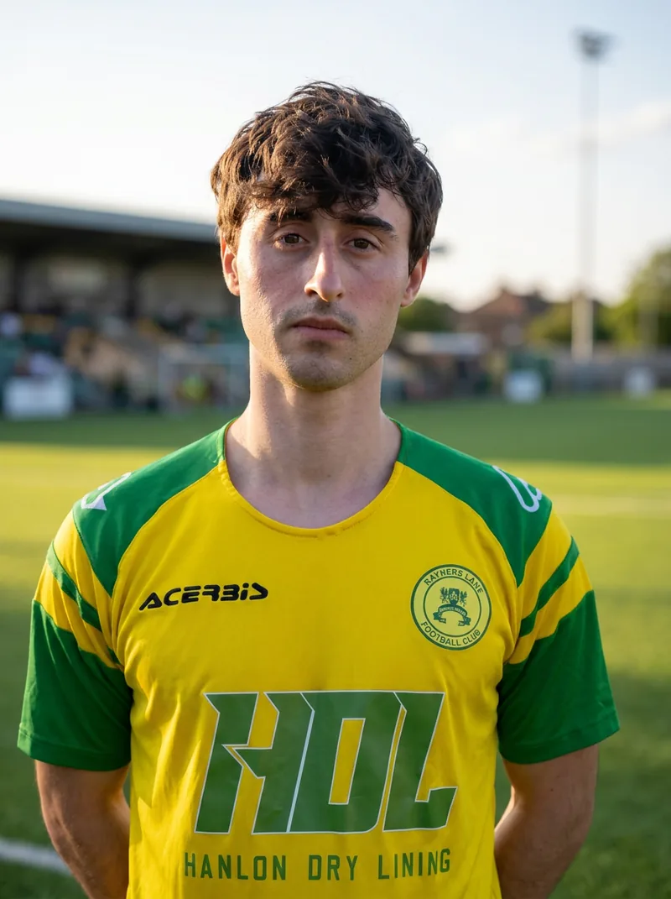
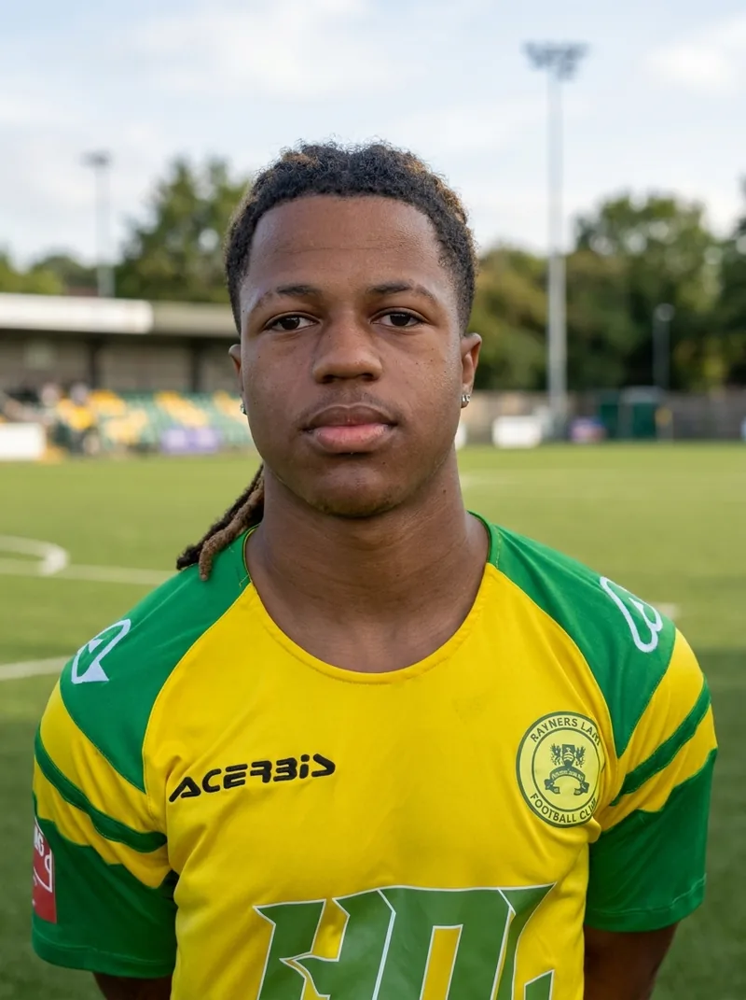
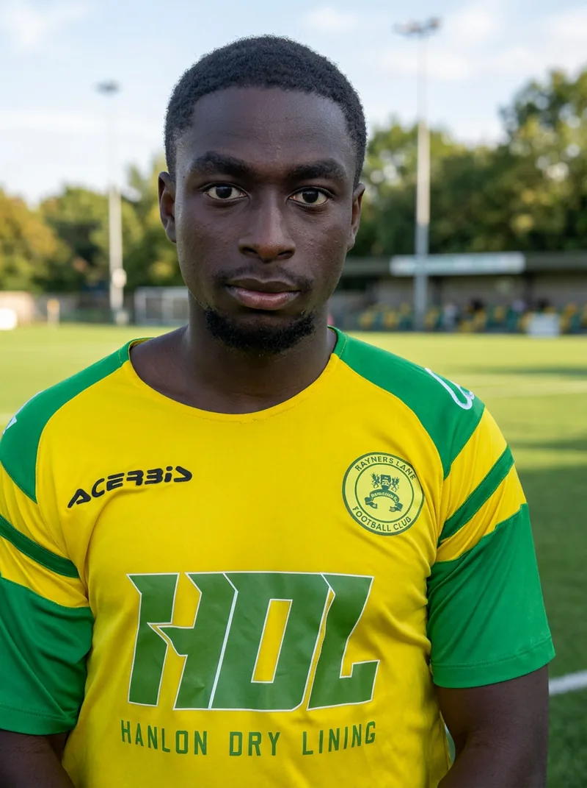
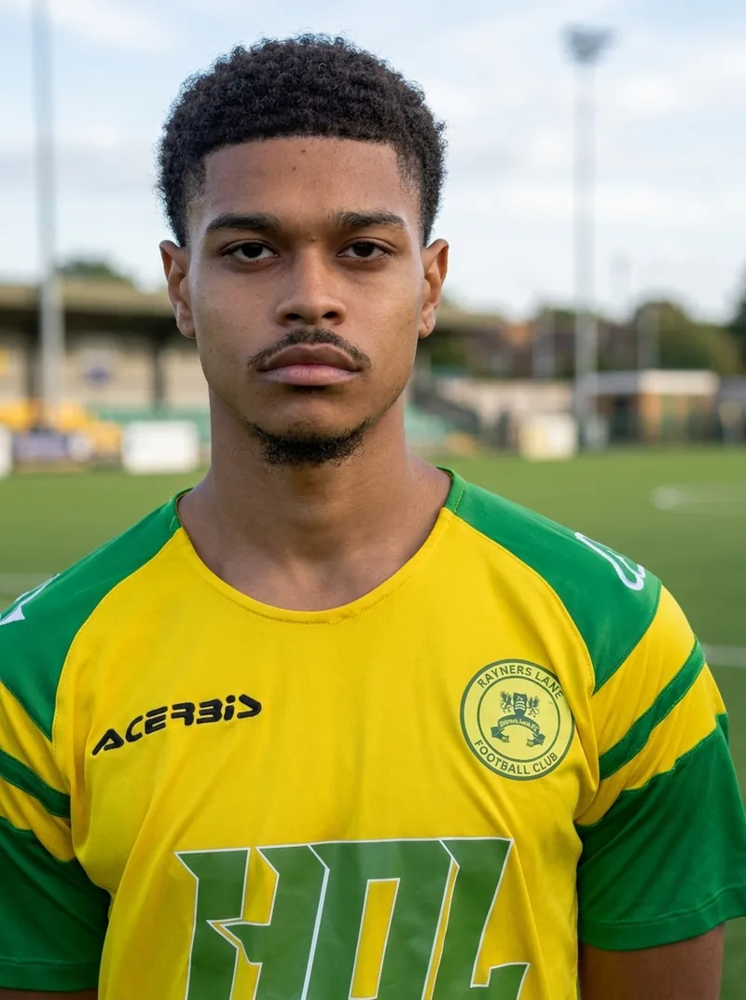

2026-27 Season · Manager: Gary Pitt
Combined Counties Premier Division North · Step 5 · Tithe Farm.
info@raynerslanefc.co.uk
Summer Trials 2026. Gary Pitt is building The Lane’s 2026-27 squad. Register for trials at Tithe Farm.